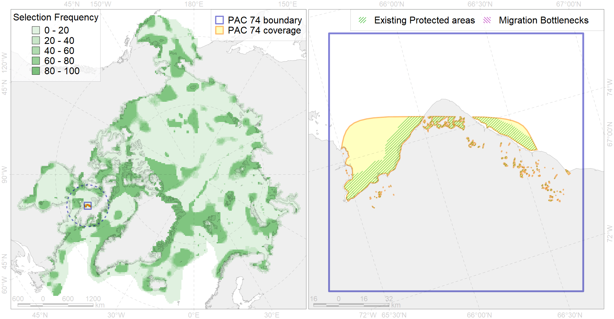

Region 74
Region 74
“ArcNet” scenario 33 achievement for region 74.
Use Accenter for advanced mode.

0
CFs inside of Region completely
0
CFs inside of Region at quarter
0
Complete-targets achievement by Region
0
Half-targets achievement by Region
| CF | Name | Target Achievement for Region | Proportion of Target Achievement in Region | Amount Proportion in Region |
|---|---|---|---|---|
| 7138 | III.1.1.5. Foxe Basin shallow shelf | 15.0% | 5.1% | 1.8% |
| 7045 | Fox Basin trnasitional zone | 4.3% | 2.1% | 0.9% |
| 8037 | Salt marshes of the Hudson Bay LME | 2.2% | 1.6% | 0.7% |
| 4035 | Feeding area of the Lake trout (Salvelinus namaycush) (F32) | 3.2% | 1.3% | 0.6% |
| 3035 | Marginal Ice Zone distribution in July in the Hudson Bay LME | 0.8% | 0.6% | 0.3% |
| 2022 | Harp seal foraging areas in the Hudson Bay | 0.8% | 0.8% | 0.2% |
| 5103 | Bowhead whale Baffin population spring-autumn distribution | 0.8% | 0.4% | 0.2% |
| 1002 | Atlantic Walrus Summer Distribution in Canada | 0.5% | 0.3% | 0.2% |
| 2010 | Bearded seal whelping areas in the Hudson Bay | 0.6% | 0.6% | 0.2% |
| 4075 | Fish zoogeography, Arctic Region, High-Arctic Shelf Province, Hudson District | 1.4% | 0.5% | 0.2% |
| 2048 | Ringed seal whelping areas in the Hudson Bay area | 0.5% | 0.5% | 0.2% |
| 4029 | Feeding area of the Arctic charr (Salvelinus alpinus), anadromous populations (F28) | 0.2% | 0.1% | 0.1% |
| 4053 | Range of the Fourhorn Sculpin (Myoxocephalus quadricornis) (F 45), Euro-Asian populations | 2.0% | 0.1% | 0.1% |
| 7139 | III.1.1.6. Foxe Basin middle shelf | 0.6% | 0.2% | 0.1% |
| 2061 | Ringed seal circumpolar foraging areas as predicted by MIZ distribution | 0.1% | 0.1% | 0.0% |
| 6083 | Thick-billed murre (Uria lomvia lomvia) wintering grounds | 0.1% | 0.1% | 0.0% |
| 4041 | Range of the Polar Cod (Boreogadus saida) (F35) | 0.1% | 0.0% | 0.0% |
| 5112 | Arctic Cetaceans (beluga, bowhead, narwhal) winter habitats as predicterd by MIZ | 0.0% | 0.0% | 0.0% |